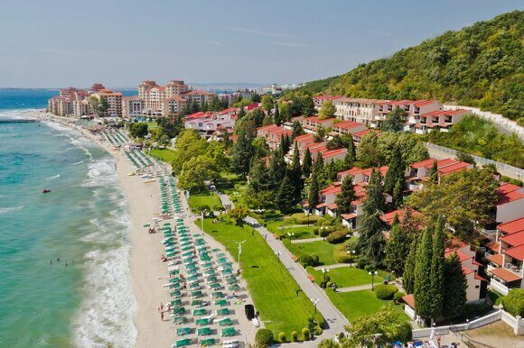

« НазадБолгария в 2025: что изменилось для российских туристов? Болгария традиционно занимает одно из лидирующих мест среди направлений для российских туристов. Благодаря своему мягкому климату, историческим достопримечательностям, живописной природе и высоким стандартам отдыха, эта страна привлекает всё больше любителей путешествий. В последние годы Болгария становится популярной не только у туристов, но и у граждан, которые намерены работать, учиться или просто провести отпуск за границей. В условиях динамично меняющегося визового режима и вопросов безопасности, связанных с документальной поддержкой поездок, тема въезда в Болгарию приобретает особую актуальность для граждан РФ. Современные изменения в международных отношениях, изменения в визовом режиме и растущий поток туристов вынуждают власти обновлять и совершенствовать правила въезда, что напрямую затрагивает граждан России. В 2025 году можно ожидать ряд изменений, касающихся правил оформления виз, требований к документам, процедуры контроля и работы государственных органов. Поэтому важно заранее быть в курсе последних нововведений, чтобы подготовиться к поездке максимально качественно. Визовый режимСитуация с визовым режимом для россиян в Болгарии, как и во всей Шенгенской зоне, остается крайне динамичной и зависит от геополитической обстановки и решений, принимаемых Европейским Союзом. В 2025 году, как и ранее, для большинства граждан России въезд в Болгарию, являющуюся членом ЕС и Шенгенского соглашения, требует наличия шенгенской визы. Исключения возможны лишь для отдельных категорий лиц (дипломаты, обладатели особых видов разрешений на въезд), но это не распространяется на обычных туристов. Болгария действительно привлекательна для российских туристов. Сочетание относительно невысоких цен (по сравнению с другими странами ЕС) с европейским уровнем обслуживания делает ее привлекательным местом для отдыха. Прекрасные песчаные пляжи Черноморского побережья, богатая история, начиная от фракийских поселений и заканчивая османским наследием, вкусная и разнообразная кухня, близость культуры и языка — всё это способствует росту популярности Болгарии среди российских путешественников. Географическая доступность также играет важную роль: многочисленные чартерные рейсы из различных городов России, а также возможность добраться на автомобиле или автобусе делают поездку относительно удобной. Болгария предлагает широкий выбор вариантов отдыха: от спокойного семейного отдыха на курортах Солнечного берега или Золотых песков до активного туризма в горах Рила и Пирин, посещения исторических городов – Велико Тырново, Пловдива, Несебра, и знакомства с уникальными природными объектами, такими как Семь Рильских озёр. Однако, мечта об отдыхе в Болгарии требует предварительной подготовки и получения необходимой визы. Получение шенгенской визы – процесс, требующий внимательности и тщательного сбора документов. Важно понимать, что отсутствие действующей шенгенской визы автоматически означает необходимость подачи заявки на новую. Процесс начинается с заполнения визовой анкеты. Крайне важно заполнить анкету максимально точно и корректно. Любые ошибки или неточности могут привести к задержке обработки заявления или даже к отказу в выдаче визы. В анкете указывается цель поездки, продолжительность планируемого пребывания в Болгарии, маршрут путешествия (если он известен), информация о месте проживания в Болгарии (бронирование отеля, приглашение от частного лица) и другие данные. Рекомендуется использовать актуальные версии анкеты, которые можно скачать с официального сайта болгарского консульства или визового центра. При заполнении лучше воспользоваться услугами опытного переводчика, чтобы избежать недоразумений. Следующий этап – сбор необходимых документов. Список документов может варьироваться в зависимости от цели поездки и индивидуальных обстоятельств заявителя. Как правило, в пакет документов входят:
После сбора всех необходимых документов следует оплатить консульский сбор. Размер консульского сбора зависит от типа визы и может варьироваться. Оплату можно произвести в рублях или евро в соответствии с инструкциями на сайте консульства или визового центра. После подачи заявления обработка занимает от нескольких дней до нескольких недель. Рекомендуется подавать документы заблаговременно, особенно в пик туристического сезона. Обратите внимание, что получение визы не гарантировано, решение о выдаче визы принимается консульским отделом на основании представленных документов и оценки намерений заявителя. При отказе в выдаче визы заявитель обычно получает письменное уведомление с указанием причины отказа. В случае отказа можно подать повторную заявку, устранив указанные недочеты. Въезд в Болгарию с ребенкомОсновной документ для ребенка – это собственный заграничный паспорт. Важно понимать, что это не просто копия паспорта родителя, а отдельный, индивидуально оформленный документ. Для детей до 14 лет его оформление происходит проще, чем для взрослых, но всё равно занимает время. Необходимо подать заявление в соответствующие органы, предоставить необходимые фотографии и документы, подтверждающие личность ребёнка. Кроме заграничного паспорта, крайне важно иметь при себе копию свидетельства о рождении ребенка. Эта копия должна быть переведена на болгарский или английский язык. Удостоверьтесь, что перевод выполнен профессиональным переводчиком и заверен нотариально – это гарантирует его юридическую силу. Некоторые консульские службы могут предложить услуги по легализации документов, что упростит процедуру. Ситуация с детьми в возрасте от 14 лет существенно отличается. Подростки старше 14 лет обязаны иметь биометрический заграничный паспорт, аналогичный паспорту взрослого гражданина. Это означает, что им необходимо будет пройти процедуру дактилоскопии (сдачи отпечатков пальцев). В зависимости от страны выдачи паспорта, этот процесс может занять больше времени, поэтому стоит позаботиться об оформлении паспорта заранее. Особое внимание следует уделить правилам путешествия несовершеннолетних без сопровождения родителей. Согласно требованиям как российской, так и болгарской пограничной службы, несовершеннолетние дети не могут пересекать границу без сопровождения родителей или законных опекунов. Даже если подростку 17 лет, наличие нотариально заверенного согласия на выезд от одного или обоих родителей является обязательным условием. В документе должны быть четко указаны: фамилия, имя, дата рождения ребенка, данные родителей (паспорта, адреса), даты поездки, страна назначения и контактная информация. В некоторых случаях пограничники могут потребовать и другие документы, подтверждающие родство или опекунство. Лучше подготовиться к этому заранее, собрав копии свидетельств о рождении, браке, решения суда об опекунстве и т.д. Рекомендуется иметь при себе и другие документы, подтверждающие личность ребёнка, например, свидетельство о рождении (оригинал), медицинский страховой полис, справку из школы (если поездка происходит во время учебного года). Въезд в Болгарию с животнымПеревоз домашних животных в Болгарию, являющуюся частью Шенгенской зоны, регулируется строгими правилами. Важно помнить, что количество животных, разрешенных к провозу одним человеком, ограничено (обычно не более пяти, но это может зависеть от размера животных и правил авиакомпании). Каждый питомец должен иметь международный ветеринарный паспорт, выданный аккредитованной ветеринарной клиникой. Паспорт должен содержать все необходимые отметки о проведенных прививках, в том числе обязательную вакцинацию от бешенства. Вакцинация от бешенства должна быть проведена не менее чем за 21 день, а некоторые авиакомпании требуют и более длительного срока, до месяца, до поездки. Необходимо убедиться, что вакцинация проведена с соблюдением всех требований, и что срок действия вакцины не истек. Кроме вакцинации, животному необходимо вживить микрочип для идентификации. Номер чипа должен быть указан в ветеринарном паспорте. За несколько дней до поездки (обычно 3-5 дней) необходимо сдать анализы крови на антитела к вирусу бешенства. По результатам анализов выдается ветеринарная справка, подтверждающая отсутствие заболевания. Формы таких справок могут отличаться в зависимости от страны, поэтому лучше уточнить требования заранее. Например, форма 5А, о которой вы упомянули, может использоваться в России, но в Болгарии могут потребоваться другие документы. Важно уточнить требуемые формы у ветеринарного специалиста и у авиакомпании, осуществляющей перелет. За сутки до вылета владельцу животного рекомендуется обработать животное специальными средствами от паразитов. Это требование направлено на предотвращение распространения инфекционных заболеваний. Помимо ветеринарного паспорта, возможно, потребуется заполнение специальных форм, предоставляемых авиакомпанией. Информация о правилах перевозки животных на борту самолета обычно указана на сайте авиакомпании или может быть получена по телефону. Важно изучить эти правила заранее, чтобы избежать непредвиденных ситуаций в аэропорту. Несоблюдение правил провоза животных может привести к отказу в допуске к перелету или к карантину животного по прибытии. Поэтому тщательная подготовка и своевременное обращение к ветеринару являются залогом успешной поездки. Не забудьте также проверить требования конкретной авиакомпании, так как у каждой могут быть свои дополнительные правила. Таможенные правила: детальный разборРазрешенные товарыБазовые нормы беспошлинного ввоза, указанные в исходном тексте (1 литр алкоголя крепостью свыше 22%, 2 литра слабоалкогольных напитков, 200 сигарет/100 сигарилл/50 сигар, личные вещи общей стоимостью до €430 для взрослых и €185 для детей), актуальны и в 2025 году. Однако, важно уточнить некоторые нюансы. Под "личными вещами" понимаются предметы, предназначенные для личного пользования, а не для коммерческой деятельности. То есть, при большом количестве одинаковых товаров (например, десятки пар обуви одного бренда) таможенники могут заподозрить коммерческую цель ввоза и потребовать уплату пошлин и налогов. Также следует учитывать, что определение "личных вещей" достаточно размыто, и конечное решение остается за таможенным органом. Рекомендуется иметь при себе чеки на дорогостоящие вещи, чтобы подтвердить их приобретение до поездки. Помимо указанных норм, разрешено ввозить без декларирования небольшое количество продуктов питания для личного потребления. Однако, это не распространяется на продукты животного происхождения, которые требуют дополнительных разрешений и сертификатов. Ввоз мяса, молочных продуктов, яиц и других скоропортящихся продуктов строго регламентируется и может быть запрещен вовсе. Более детальную информацию лучше уточнить на официальном сайте Болгарской таможенной службы перед поездкой. Запрещенные предметыСписок запрещенных к ввозу предметов включает не только наркотические вещества, оружие без разрешения и некоторые медикаменты (содержащие наркотические компоненты или психотропные вещества), но также и другие опасные товары: взрывчатые вещества, легковоспламеняющиеся материалы, токсичные вещества, растения и животных без соответствующих документов, фальшивые деньги и ценные бумаги. Важно отметить, что некоторые лекарства, свободно продающиеся в России, могут быть запрещены в Болгарии. Перед поездкой необходимо проконсультироваться с врачом и уточнить возможность ввоза необходимых медикаментов. Желательно иметь при себе рецепт на лекарства, содержащие сильнодействующие вещества. Декларирование товаровОбязательному декларированию подлежат товары стоимостью свыше €10 000. Однако, рекомендуется декларировать любые ценные вещи, даже если их стоимость ниже этой суммы. Это поможет избежать возможных проблем и задержек на границе. Заявление о ввозе товаров заполняется на специальном бланке, который можно получить на таможенном посту. Неправильное заполнение или сокрытие информации может повлечь за собой значительные штрафы – от €500 до €2000, а в некоторых случаях и уголовную ответственность. Кроме денежных штрафов, возможно изъятие незадекларированных товаров. Транспорт и перемещение внутри страныМеждународные аэропортыПомимо трёх основных аэропортов (София, Варна, Бургас), в Болгарии существуют и другие, меньшие по размеру, аэропорты, обеспечивающие внутренние и некоторые международные рейсы. Например, аэропорт Пловдива, аэропорт Гора Джумая. Выбирать аэропорт следует исходя из конечной точки вашего путешествия в Болгарии. Прямые рейсы из России в Болгарию предлагают многие авиакомпании, цены на билеты сильно зависят от сезона и времени бронирования. Железнодорожное сообщениеМеждународное железнодорожное сообщение между Россией и Болгарией действительно ограничено, но все же доступно. Поезда часто следуют через территорию других стран, что увеличивает время в пути. Для удобства планирования поездки рекомендуется использовать специализированные сайты по поиску железнодорожных билетов с указанием всех маршрутов и расписания. Автомобильное путешествиеПутешествие на автомобиле предоставляет большую свободу передвижения. Международное водительское удостоверение и «Зеленая карта» (Green Card) – обязательны. Некоторые участки болгарских автомагистралей платные, оплата производится на специальных пунктах. Рекомендуется заранее ознакомиться с системой оплаты проезда по автомагистралям и иметь при себе достаточное количество наличных денег или банковскую карту для оплаты. Правила дорожного движения в Болгарии соответствуют европейским стандартам, но есть нюансы, с которыми стоит ознакомиться до поездки. Например, в Болгарии строго относятся к превышению скорости и правилам использования ремней безопасности. Полицейские часто проводят проверки на дорогах. Общественный транспортВ больших городах Болгарии развита система общественного транспорта. Автобусы наиболее распространенный вид транспорта, трамваи и троллейбусы есть только в крупных городах, таких как София. В курортных городах часто курсируют маршрутные такси, которые являются более удобным и быстрым вариантом для перемещения между районами. Стоимость проезда в общественном транспорте невысока. В некоторых городах действуют электронные проездные карты, которые позволяют экономить на поездках. Поездки на междугородних автобусах также являются популярным и бюджетным способом передвижения между городами. Дополнительные советыПеред поездкой проверьте актуальность визового режима. Для россиян может потребоваться виза, в зависимости от цели и продолжительности поездки.
ЗаключениеПосещение Болгарии в 2025 году остается отличным выбором для россиян, которые ищут качественный отдых по доступным ценам. Однако для въезда в страну потребуется заблаговременно оформить визу. Соблюдение всех требований и внимательная подготовка документов помогут избежать лишних сложностей. Болгария ждёт своих гостей, предлагая незабываемые впечатления, теплое гостеприимство и множество возможностей для отдыха на любой вкус. Тщательная подготовка к поездке в Болгарию – залог успешного и приятного отдыха. Изучите все нюансы, связанные с въездом, таможней и передвижением внутри страны, и ваше путешествие пройдет без неприятных неожиданностей. Срочное оформление загранпаспорта и шенгенской визы для поездки в БолгариюВ Паспортно-визовом центре «Север» мы предлагаем услуги по срочному оформлению загранпаспорта и шенгенской визы для вашей поездки в Болгарию. Опыт и надежностьМы работаем более 25 лет, обеспечивая высокое качество услуг и оперативность в оформлении документов. Наша команда профессионалов поможет вам пройти все этапы оформления загранпаспорта и визы быстро и без хлопот. Услуги
Преимущества
Как нас найти
Обращайтесь к нам, чтобы ваша поездка в Болгарию стала реальностью как можно скорее!
|
Комментарии
Комментариев пока нет